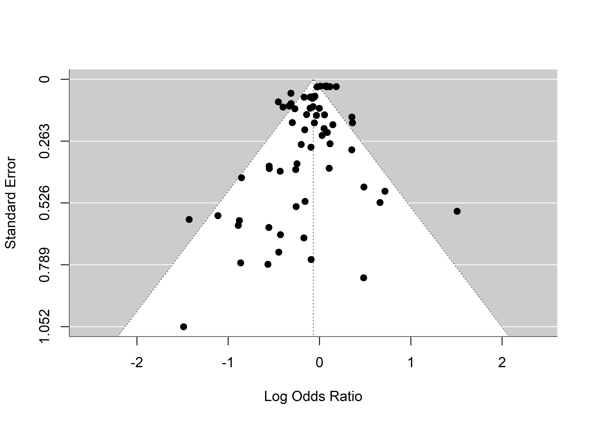
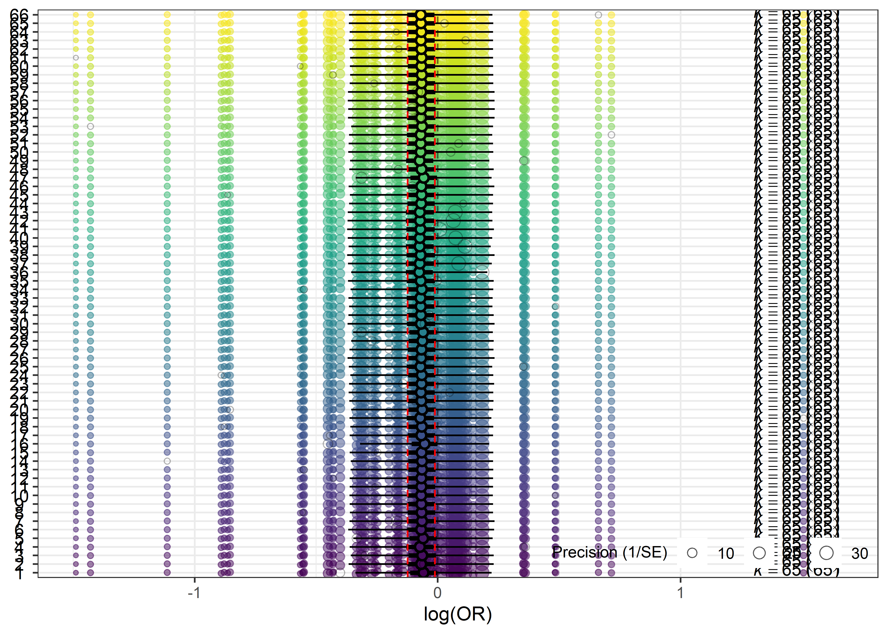
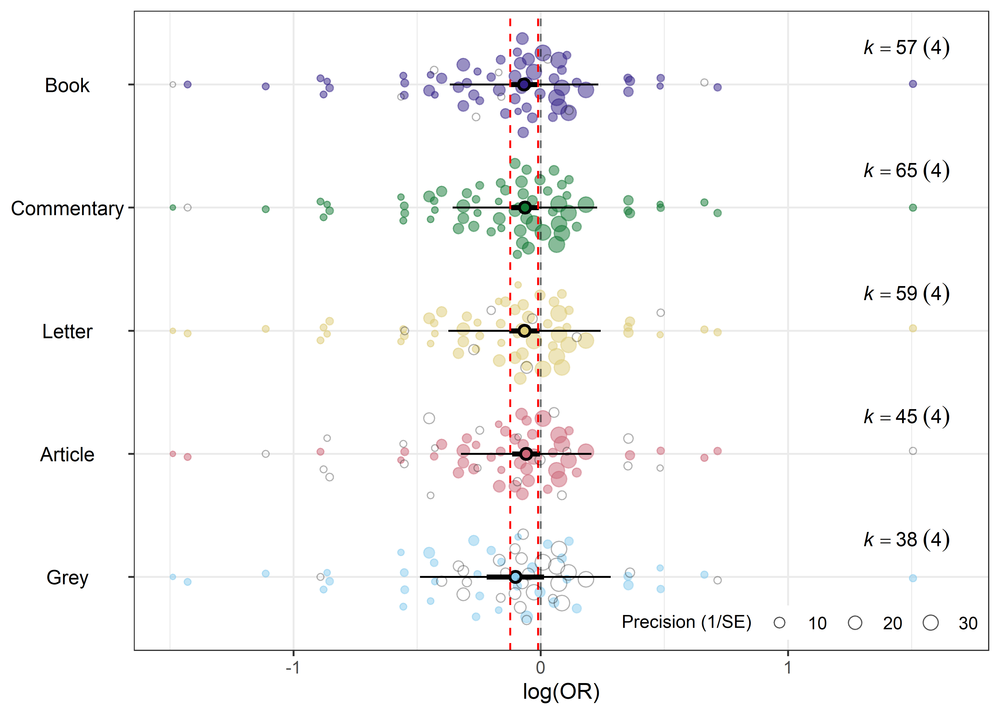

# Dataset
datos <- metadat::dat.bornmann2007 |>
rownames_to_column(var = "id")
# Modelo
mod <- rma(
ai = waward,
n1i = wtotal,
ci = maward,
n2i = mtotal,
measure = "OR",
data = datos,
slab = study
)Sesgo de publicación y análisis de sensibilidad
Tamara Ricardo ![]()
Introducción
En esta última sección veremos cómo evaluar el sesgo de publicación y realizar análisis de sensibilidad en los modelos de meta-análisis. Estos procedimientos complementan el análisis principal al permitir identificar posibles fuentes de sesgo y evaluar la robustez de las conclusiones obtenidas.
Sesgo de publicación
El sesgo de publicación (publication bias) se refiere a la tendencia de publicar con mayor frecuencia estudios con resultados positivos, estadísticamente significativos o con grandes tamaños del efecto. Esto puede distorsionar la síntesis de la evidencia en un meta-análisis y sesgar la estimación del efecto global. Por ello, es esencial evaluar y ajustar el sesgo de publicación para garantizar que los resultados sean lo más precisos y representativos posible.
Como la mayoría de las herramientas clásicas para evaluar el sesgo de publicación fueron desarrolladas para modelos de meta-análisis convencionales y no admiten modelos multinivel o con moderadores, ajustaremos un modelo para estimar el efecto global usando rma().
Funnel plots
El funnel plot o gráfico de embudo representa en el eje \(Y\) el tamaño muestral o la precisión de los estudios, y en el eje \(X\) el estimador de efecto para cada estudio. En ausencia de sesgo de publicación, se espera que los estudios se distribuyan de forma aproximadamente simétrica alrededor del efecto global, formando un patrón similar a un embudo; de lo contrario, se observa asimetría.
Para generar un funnel plot, se utiliza la función funnel():
funnel(mod)
Test de Egger
El test de Egger evalúa la simetría del funnel plot mediante una regresión lineal entre el estimador de efecto y su error estándar. Un p-valor menor que 0,05 sugiere la presencia de asimetría en el funnel plot, la cual puede ser compatible con sesgo de publicación.
Este test se implementa con la función metabias() para modelos ajustados en meta o regtest() para modelos ajustados en metafor:
regtest(mod)
Regression Test for Funnel Plot Asymmetry
Model: mixed-effects meta-regression model
Predictor: standard error
Test for Funnel Plot Asymmetry: z = -1.9925, p = 0.0463
Limit Estimate (as sei -> 0): b = -0.0122 (CI: -0.0880, 0.0637)Test de Begg
El test de Begg utiliza la correlación de rangos para evaluar la relación entre el tamaño del efecto y el error estándar. Un p-valor menor que 0,05 sugiere la presencia de asimetría en el funnel plot, la cual puede ser compatible con sesgo de publicación.
En meta, se implementa añadiendo el argumento method.bias = "Begg" a la función metabias(), mientras que metafor usa la función ranktest():
ranktest(mod)
Rank Correlation Test for Funnel Plot Asymmetry
Kendall's tau = 0.0191, p = 0.8255Trim-and-fill
El método trim-and-fill estima el número de estudios faltantes debido al sesgo de publicación y ajusta la ajusta la estimación del efecto global en consecuencia, incorporando estudios hipotéticos. Esto ayuda a corregir la estimación del efecto global.
Se utiliza la función trimfill():
trimfill(mod)
Estimated number of missing studies on the right side: 9 (SE = 5.3016)
Random-Effects Model (k = 75; tau^2 estimator: REML)
tau^2 (estimated amount of total heterogeneity): 0.0223 (SE = 0.0076)
tau (square root of estimated tau^2 value): 0.1495
I^2 (total heterogeneity / total variability): 75.82%
H^2 (total variability / sampling variability): 4.14
Test for Heterogeneity:
Q(df = 74) = 238.4770, p-val < .0001
Model Results:
estimate se zval pval ci.lb ci.ub
-0.0514 0.0287 -1.7928 0.0730 -0.1075 0.0048 .
---
Signif. codes: 0 '***' 0.001 '**' 0.01 '*' 0.05 '.' 0.1 ' ' 1Generalmente, se recomienda utilizar dos o más métodos para evaluar el sesgo de publicación y obtener una visión más completa de su impacto en el meta-análisis. En el ejemplo anterior, no hubiera sido necesario realizar el trim-and-fill ya que el funnel plot tiene una forma bastante simétrica, el p-valor del test de Egger y Begg fue \(\leq 0,05\).
Análisis de sensibilidad
El análisis de sensibilidad permite evaluar la robustez de los resultados de un meta-análisis. Una estrategia común consiste en reajustar el modelo excluyendo estudios con determinadas características (por ejemplo, menor calidad metodológica o menor tamaño muestral), y luego comparar el estimador de efecto y su intervalo de confianza del 95% con los del modelo original. Otra alternativa es el análisis leave-one-out, que implica eliminar estudios iterativamente para observar como cambia el estimador global.
En meta se implementa usando la función metainf() y solo admite modelos de efecto fijos o de efectos aleatorios. El paquete orchaRd tiene la función leave_one_out()que permite realizar un análisis de sensibilidad de modelos ajustados con metaforsegún niveles de una variable categórica.
Por ejemplo, podemos excluir estudios por su id:
l1 <- leave_one_out(mod, group = "id")Este procedimiento ayuda a identificar si algún estudio influye de manera desproporcionada en los resultados del meta-análisis. Podemos graficar los resultados usando la función orchard_leave1out():
orchard_leave1out(
leave1out = l1,
xlab = "log(OR)"
)
En el gráfico, el eje \(Y\) representa cada elemento del grupo (en este caso, cada estudio), mientras que el eje \(X\) muestra el estimador de efecto. Para cada estudio, se presenta el resultado del modelo al excluirlo: estimador de efecto global, su intervalo de confianza, el intervalo de predicción, y los “puntos fantasma”, que marcan la ubicación del estudio excluido.
También podríamos excluir según tipo de artículo:
l2 <- leave_one_out(mod, group = "doctype")
orchard_leave1out(
leave1out = l2,
xlab = "log(OR)"
)
🔗 Otras opciones de gráficos con
orchaRd: LINK
Hasta aquí hemos cubierto los aspectos básicos para evaluar fuentes de heterogeneidad en modelos de meta-análisis. Quienes tengan interés en profundizar en las medidas de heterogeneidad y su aplicación, recomendamos consultar el artículo de (Bown y Sutton 2010) y los capítulos 7, 8 y 9 de Harrer et al. (2021).
Referencias
Bown, M. J., y A. J. Sutton. 2010. «Quality control in systematic reviews and meta-analyses». European Journal of Vascular and Endovascular Surgery 40 (5): 669-77. https://doi.org/10.1016/j.ejvs.2010.07.011.
Harrer, Mathias, Pim Cuijpers, Toshi A Furukawa, y David D Ebert. 2021. Doing Meta-Analysis With R: A Hands-On Guide. Chapman & Hall/CRC Press. https://www.routledge.com/Doing-Meta-Analysis-with-R-A-Hands-On-Guide/Harrer-Cuijpers-Furukawa-Ebert/p/book/9780367610074.